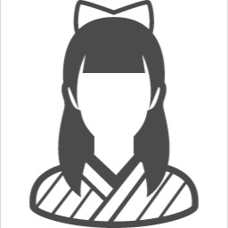

Top
My Profile
My Favorite
Contact
My Profile
History
2000
誕生
7月11日、AB型。ホッケーのまち・岩手県岩手郡岩手町に生まれる。
同じ週に同じ病院で生まれた友達はホッケー日本代表。私は見る専です。
里帰り出産であり、当時両親は愛知県岩倉市に住んでいた。
2002
幼稚園入学
あまり記憶がないが、パンダ組、たにし組、かに組だった。
途中で三重県四日市市、青森県八戸市に引っ越した。
2007
小学校入学
熊本県熊本市4年間、新潟県新潟市1年間、東京都品川区で1年間過ごした。
今考えると人間関係のリセットはしんどいと思うが、 当時の私は新天地へのワクワクの方が勝っていたみたいであまりダメージを食らっていなかったそう。
2012
中学校入学
小中一貫校だったので1年はメンツ変わらず。
2年の時、祖父母の介護の関係で生まれ故郷に転校。
（この後父の会社で希望地赴任の制度ができたので、実家は岩手に落ち着いた）
田舎過ぎて人数不足のバスケ部に「身長が高いから」という理由だけで勧誘され、 運動音痴なのがバレる前に捕まってしまい3か月だけ所属していた。
新人戦だけ出て無事敗退・釈放されたので、総合文化部（何やってもいい）にいた。
2016
高校入学
地元から出たくて勉強して隣市である盛岡の女子高に進学。
超楽しかったです。今でもみんなでよく遊ぶ。 ただ片道1.5時間の通学はなかなかキツかった。電車も1時間に一本だから下手したら2時間超えてた。。
2019
大学入学
早稲田大学人間科学部。
2年寮、2年一人暮らし。所沢は想像より田舎だったけど、 地元とギャップが少なくて過ごしやすい。
西武鉄道の「となりのトトロ」メロディーが好きです。
バイトはいろいろやったけど、一番長かったのはデパ地下のお惣菜屋さん。
サークルはコロナで思うように活動できなかったけど、 大学設置の障がい学生支援室というところで活動。
人科だけでなく商学部や理工学部などの授業も聞けて面白かった。
主に授業の文字起こしをしていたおかげでタイピングは結構早くなった、 かもしれない。
2023
A-force入社
これからも頑張ります。
Family Structure
父
180cm。顔と頭の形がそっくり。
母
一人で平気で岩手と関東を車で往復する。

妹
今年から神奈川で一人暮らしの大学生。
来年から私と同居したいらしいので計画中。
なんだかんだ仲良し